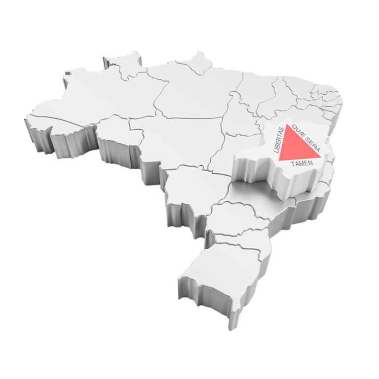
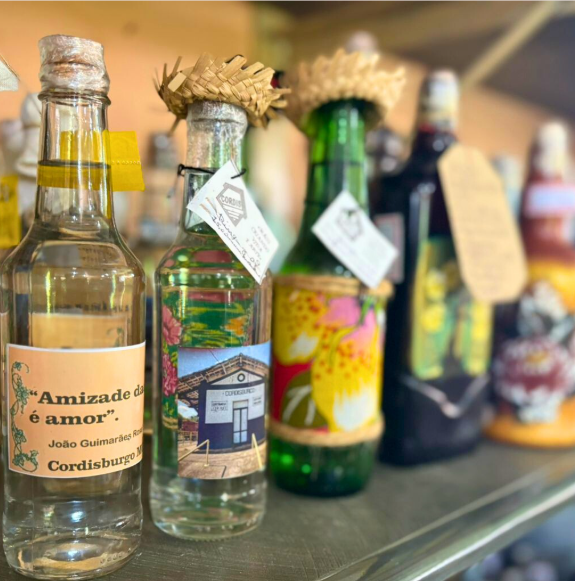
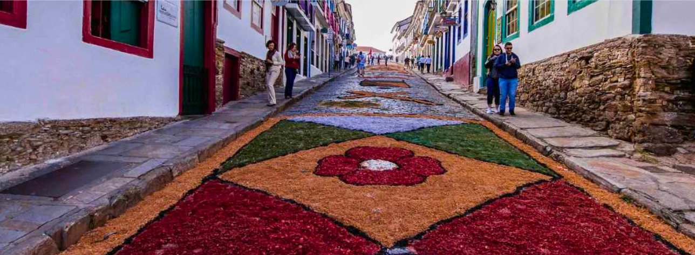

Oh! Minas Gerais
“Oh! Minas Gerais, quem te conhece não esquece jamais.”
Um território de histórias, sotaques, sabores e movimentos que ajudam a construir o país.

Muitas histórias em um só estado
Conheça alguns elementos que fazem parte da experiência de viver e conhecer Minas.
História e cultura
Em Minas, história, arte, fé e cultura se cruzam.
Território e tradição
Entre montanhas e cidades nasceram tradições, sabores e movimentos.
Acolhimento
Uma boa prosa, um “cafezin” e tempo para compartilhar histórias.
Sotaque único
Expressões que já viraram patrimônio afetivo.
“Uai, sô! Trem bão!”Minas é história viva. Minas é futuro em construção.
Minas são muitas
Em cada canto, existe uma Minas diferente.
A Minas das montanhas e do cerrado. A Minas das cidades modernas e das vilas históricas. A Minas do agronegócio, da mineração e da indústria em expansão.
Cada região tem seu jeito de falar, de cozinhar, de viver e de contar histórias. Minas nasceu da história, cresceu com trabalho e segue se reinventando todos os dias.
Indicadores do estado
História
Da busca por ouro à diversificação da indústria mineira.
Expedições e busca por riquezas
A região que hoje corresponde ao estado de Minas Gerais foi inicialmente desbravada no século XVI pelos bandeirantes em busca de ouro e pedras preciosas.
Ocupação e centro econômico
No século XVIII, a região foi povoada e se tornou um importante centro econômico para Portugal.
Queda do ouro e aumento dos impostos
A queda na produção de ouro, por volta de 1750, levou a Coroa a aumentar a cobrança de impostos sobre a mineração.
Inconfidência Mineira
O descontentamento com essa rigidez desencadeou o movimento político conhecido como Inconfidência Mineira, em 1789, que teve como principal personagem Joaquim José da Silva Xavier, o Tiradentes.
Expansão da cafeicultura
A predominância da mineração na economia do estado inibiu outras atividades, fazendo com que a cafeicultura despontasse somente no século XIX, quando passou a ser a principal atividade econômica da província, resultando em um período de prosperidade.
Crise do café e avanço industrial
A crise de 1929 e a Revolução de 1930 afetaram a produção de café e estimularam o avanço da indústria siderúrgica e da exploração mineral.
Substituição de importações
A indústria ganhou força com a política de substituição de importações, na década de 1950.
Diversificação industrial
Os anos 1970 marcaram um grande surto de industrialização em Minas Gerais, com diversificação e fortalecimento de novos setores industriais.
Minas Gerais
Onde religiosidade,
hospitalidade e gastronomia
se
cruzam.
A cultura de Minas Gerais é uma das mais ricas e singulares do Brasil, moldada por uma história que remonta ao ciclo do ouro e caracterizada por uma identidade que mescla religiosidade, hospitalidade e uma gastronomia de renome mundial.

A mesa mineira é o centro da vida social, refletindo a hospitalidade de seu povo.
Patrimônio cultural. O Queijo Minas é reconhecido como patrimônio imaterial brasileiro pelo IPHAN.
Pratos ícones. Destacam-se o pão de queijo, o feijão tropeiro, o frango com quiabo, o tutu à mineira e doces como o doce de leite e a goiabada com queijo.
Bebidas. O estado é famoso pela produção de cachaças artesanais e café de alta qualidade.
Tradição e Fé
Expressões coletivas que unem memória, arte, religiosidade e participação comunitária.
Congado
O Congado é uma das expressões mais fortes, misturando elementos africanos e católicos em devoção a Nossa Senhora do Rosário.
Tapetes devocionais
Os Tapetes Devocionais são um dos símbolos mais marcantes da Semana Santa e de Corpus Christi em Minas Gerais. A tradição vem desde o século XVIII e acontece em praticamente todos os municípios e distritos mineiros, especialmente Ouro Preto, Mariana e Sabará.
Os tapetes são confeccionados com serragem colorida, flores, farinha, entre outros materiais. É a mais pura arte da fé. Fiéis, famílias, crianças, pessoas idosas e turistas se unem para preparar os caminhos por onde passará a procissão.

Patrimônio e Arte
Arquitetura, escultura e literatura conectam memória, território e criação.
Minas detém cerca de 60% do patrimônio histórico tombado do Brasil, com cidades que funcionam como museus a céu aberto.
Barroco mineiro
Estilo artístico que floresceu no século XVIII, com destaque para as obras de Aleijadinho em cidades como Ouro Preto, Congonhas e Diamantina.
Patrimônios da Humanidade
Incluem o Centro Histórico de Ouro Preto, o Santuário do Bom Jesus de Matosinhos, em Congonhas, o Centro Histórico de Diamantina e o Conjunto Arquitetônico da Pampulha, em Belo Horizonte.
Literatura
Berço de nomes como Adélia Prado, Carlos Drummond de Andrade, Carolina Maria de Jesus e Guimarães Rosa, que utilizaram as paisagens e os conflitos mineiros como cenário universal.
Arte em diálogo com o futuro
Em harmonioso contraste com a herança colonial, o estado abriga o Instituto Inhotim, em Brumadinho. Reconhecido como um dos maiores museus a céu aberto do planeta, o espaço projeta Minas Gerais para o futuro ao fundir um acervo botânico exuberante com obras de arte contemporânea de relevância mundial.
Para além da arquitetura, arte e literatura, Minas se destaca na musicalidade de Clara Nunes e de movimentos como o Clube da Esquina.
Um “país” chamado
Minas Gerais
Um estado de escala continental, economia diversificada e identidade própria.
Território e população
Com mais de 20 milhões de habitantes e uma área territorial superior à de países como França ou Espanha, Minas é o quarto maior estado em extensão territorial e o segundo mais populoso do Brasil.
Força econômica
Se fosse um país, o estado teria uma economia superior à de nações como Marrocos, Tunísia, Croácia e Bolívia.
A mineração, o agronegócio e as indústrias siderúrgica e automotiva são pilares econômicos.
Identidade local
O mineiro possui modo de vida, culinária e vocabulário próprios — o “mineirês” — que geram forte sentimento de identidade local, reforçado pela cultura do cafezinho, do “trem” e do acolhimento.
Complexidade administrativa
Minas Gerais possui 853 municípios, mais do que muitos países independentes, o que cria uma complexidade administrativa interna própria.
Administração Pública
Como o Estado se organiza para atender aos interesses coletivos e prestar serviços públicos.
Administração Pública
Conceito
Refere-se tanto ao conjunto de órgãos, entidades e agentes estatais que executam atividades visando aos interesses coletivos e à prestação de serviços públicos — aspecto formal — como à atividade exercida propriamente dita: prestação de serviços, poder de polícia, fomento e intervenção — aspecto material.
Estrutura
Órgãos ligados diretamente aos entes federativos — União, estados e municípios — como ministérios e secretarias.
Entidades com personalidade jurídica própria, descentralizadas para executar atividades específicas: autarquias, fundações públicas, empresas públicas e sociedades de economia mista.
Princípios
De acordo com o artigo 37 da Constituição Federal, a Administração Pública deve seguir cinco pilares:
-
Legalidade
Atuar estritamente conforme a lei.
-
Impessoalidade
Tratamento igualitário e sem promoção pessoal de agentes.
-
Moralidade
Ética e boa-fé na conduta administrativa.
-
Publicidade
Transparência nos atos e nas contas públicas.
-
Eficiência
Busca pelo melhor resultado com o menor custo.
Esferas da Administração Pública
O Estado brasileiro se organiza em níveis autônomos e em poderes com funções distintas.
União
Responsável por questões de interesse nacional, como defesa, emissão de moeda e relações exteriores.
Estados e Distrito Federal
Foca em interesses regionais, como segurança pública, saúde, educação e transporte intermunicipal.
Municípios
Trata de questões locais, como transporte coletivo urbano, limpeza pública e educação infantil.
Três Poderes
Para que tudo funcione com equilíbrio e justiça, o Estado é dividido em três poderes. Cada poder tem uma missão diferente, mas todos trabalham em harmonia para o bem da população.
Poder Executivo
Governa e administra.
Poder Legislativo
Cria as leis e fiscaliza.
Poder Judiciário
Garante que as leis sejam cumpridas.
Poderes do Estado
A Constituição Federal, em seu artigo 2º, estabelece que são Poderes da União, independentes e harmônicos entre si, o Legislativo, o Executivo e o Judiciário.
Poder Executivo
O Poder Executivo administra o Estado. Por meio do Poder Executivo são construídas escolas e hospitais; são cuidadas as estradas; são organizados os serviços de saúde; são pagos os servidores públicos; e são colocados em prática os programas de governo. Na esfera federal, o Poder Executivo é liderado pela Presidência da República; na estadual, pelos governos estaduais; e na municipal, pelas prefeituras.
Poder Legislativo
O Poder Legislativo cria as leis que organizam a vida da sociedade. Além disso, acompanha e fiscaliza o governo, verifica se o dinheiro público está sendo bem utilizado e se o governo está cumprindo as leis.
Poder Judiciário
O Poder Judiciário resolve conflitos, garante que as leis sejam cumpridas, protege os direitos das pessoas e decide quando alguém age de forma errada.
O Recurso Público
Para que o Poder Executivo coloque em prática os programas do governo, o Estado precisa de dinheiro: o chamado recurso público.
Planejamento
Para que o recurso seja liberado e transformado efetivamente em ações para a sociedade, é necessário planejar: definir o que se pretende realizar e quanto será necessário para isso.
Plano
O governo organiza a necessidade e define a ação pública.
Projeto de lei
O plano é convertido em uma proposta e enviado ao Poder Legislativo.
Autorização
Após a aprovação, o recurso é autorizado e a política pública pode sair do papel.
Programa Estadual de Transporte Escolar — PTE/MG
Por meio do PTE/MG, a Secretaria de Estado de Educação repassa recursos aos municípios para garantir o transporte de estudantes da rede estadual que moram na zona rural.
Embora o programa exista desde 2015, os recursos continuam sendo analisados e aprovados a cada ano pela Assembleia Legislativa. Esse processo permite que o serviço continue funcionando e atendendo quem precisa.
O Ciclo Orçamentário
O orçamento público percorre quatro etapas conectadas. Cada etapa transforma prioridades governamentais em serviços, obras e políticas públicas acompanhadas pela sociedade.
-
Etapa 01
Planejamento e elaboração
O Poder Executivo faz as contas e desenha a proposta. A Constituição Federal de 1988, nos artigos 165 a 169, institui o PPA, a LDO e a LOA.
Em Minas Gerais, o PPA corresponde ao PPAG — Plano Plurianual de Ação Governamental.PPAPlano Plurianual É a visão de médio prazo. O governo planeja o que pretende realizar nos próximos quatro anos.
LDOLei de Diretrizes Orçamentárias Define prioridades e metas para o ano seguinte e orienta a elaboração do orçamento.
LOALei Orçamentária Anual Detalha quanto será destinado, no ano seguinte, a hospitais, escolas, rodovias e outras ações.
-
Etapa 02
Análise, debate e aprovação
O governo não aprova o próprio plano. A proposta é enviada ao Poder Legislativo — em Minas Gerais, à Assembleia Legislativa de Minas Gerais. Representantes eleitos analisam, debatem, sugerem mudanças, chamadas emendas, e votam o projeto de lei.
-
Etapa 03
Execução: o planejamento sai do papel
Após a aprovação da lei e o início do novo ano, começa a execução. O governo arrecada impostos, como IPVA e ICMS, paga contas e servidores, compra medicamentos e realiza obras, seguindo o que foi autorizado na LOA.
-
Etapa 04
Controle e avaliação
O governo e os órgãos de controle acompanham a execução, verificam riscos, resultados e o uso correto dos recursos.
A avaliação baseada em evidências utiliza dados e indicadores para identificar o que funciona e aperfeiçoar as políticas públicas.
DadosIndicadoresResultados -
Etapa 05
Prestação de contas
A Administração Pública apresenta o que arrecadou, gastou e realizou, permitindo a fiscalização da gestão.
Essas informações são organizadas em relatórios e demonstrativos, como veremos no próximo capítulo.
Demonstrativos e Relatórios Fiscais
Balanços e relatórios da Lei de Responsabilidade Fiscal traduzem a gestão pública em dados que podem ser acompanhados pela sociedade.
Balanço Geral do Estado
Um dos documentos mais importantes da gestão pública.
O Balanço Geral do Estado reúne, de forma organizada:
- tudo o que o Estado arrecadou;
- tudo o que foi gasto;
- onde o dinheiro foi aplicado.
Arrecadação e despesa
Receitas registram a entrada de recursos. Despesas mostram a aplicação desses recursos na manutenção do Estado e na prestação de serviços públicos.
É quando o dinheiro sai da conta do contribuinte — pessoa ou instituição — e entra na conta do governo por meio das receitas. O governo deve declarar e classificar cada centavo recebido.
É a aplicação do dinheiro arrecadado para manter o funcionamento do Estado e a prestação de serviços públicos para a sociedade.
- Impostos e taxas: R$ 73,43 bilhões
- Transferências correntes: R$ 24,27 bilhões
- Receita patrimonial: R$ 8,34 bilhões
- Pessoal e encargos sociais: R$ 83,06 bilhões — 69,6%
- Juros e encargos da dívida: R$ 3,42 bilhões — 2,87%
- Outras despesas correntes: R$ 32,89 bilhões — 27,6%
Conceitos importantes
Termos utilizados nos demonstrativos contábeis e nos relatórios previstos pela Lei de Responsabilidade Fiscal.
- Despesas obrigatórias
- Despesas que o Estado tem obrigação de pagar, como pessoal, previdência, repasses para municípios e despesas com saúde e educação.
- Dívida pública
- Valor total das obrigações financeiras — empréstimos, emissão de títulos públicos ou precatórios — assumidas pelo Estado com terceiros para complementar o caixa e realizar políticas públicas.
- Restos a pagar
- Despesas empenhadas em um ano, mas não pagas naquele exercício, que ficam registradas para pagamento no ano ou nos anos seguintes.
- Receita Corrente Líquida — RCL
- Valor restante das receitas arrecadadas após a aplicação das deduções referentes a receitas com vinculações específicas.
A RCL é utilizada como base para calcular limites previstos na Lei de Responsabilidade Fiscal, como despesas com pessoal e dívida consolidada líquida.
Relatório de Gestão Fiscal
O RGF permite verificar se o governo utiliza os recursos públicos dentro dos limites e das regras fiscais.
Obrigatório pela LRF
A elaboração e a divulgação do Relatório de Gestão Fiscal são exigidas pela Lei Complementar nº 101/2000 — Lei de Responsabilidade Fiscal.
O relatório apresenta a situação fiscal da Administração Pública e demonstra se os limites legais relacionados a despesas com pessoal, dívida pública, operações de crédito, concessão de garantias e disponibilidade de caixa ao final do exercício estão sendo cumpridos.
Despesa com pessoal
Três medidas ajudam a verificar o comprometimento das receitas com servidores, aposentadorias, pensões e encargos.
Despesa Bruta com Pessoal
Total gasto com servidores ativos, aposentadorias, pensões, gratificações e encargos previdenciários.
Despesas Não Computadas
Gastos com pessoal que não entram no cálculo do limite da LRF, como indenizações, decisões judiciais específicas e programas de desligamento incentivado.
Despesa Líquida com Pessoal
É a despesa bruta com pessoal menos as despesas não computadas.
Dívida consolidada
Os indicadores de dívida mostram as obrigações de longo prazo e os recursos disponíveis para reduzi-las.
Dívida Consolidada
Total das dívidas de longo prazo, acima de 12 meses. Inclui empréstimos, financiamentos, parcelamentos previdenciários e precatórios parcelados.
Deduções
Valor que o Estado possui em caixa ou em aplicações financeiras e que pode ser considerado para pagar suas obrigações.
Dívida Consolidada Líquida
É a dívida consolidada menos as deduções permitidas.
Garantias e operações de crédito
Esses indicadores mostram compromissos assumidos pelo governo, mecanismos de proteção e recursos obtidos por financiamento.
Garantias Concedidas
Ocorrem quando o governo assume o compromisso de pagar uma dívida caso outra entidade não cumpra a obrigação.
Contragarantias Recebidas
São garantias exigidas pelo governo para proteção caso seja necessário pagar a dívida garantida.
Operações de Crédito
São empréstimos ou financiamentos contratados pelo governo.
Disponibilidade de caixa
O indicador compara os recursos disponíveis no fim do exercício com as obrigações que ainda precisam ser pagas.
Disponibilidade de Caixa Bruta
Total de dinheiro disponível em caixa e em contas bancárias no encerramento do ano.
Obrigações a Pagar
Despesas empenhadas ou contratadas que não foram pagas até o fim do ano e outros valores que deveriam ter sido pagos no exercício.
- Restos a pagar processados: o serviço ou bem já foi entregue.
- Restos a pagar não processados: a entrega ainda ocorrerá.
Disponibilidade de Caixa Líquida
É o dinheiro disponível após descontar as obrigações a pagar.
Atenção: quando o resultado é negativo, existem mais contas pendentes do que recursos disponíveis.
Execução das Despesas por Função
A classificação por função e subfunção mostra em qual área pública o recurso foi aplicado, independentemente do órgão que realizou o gasto.
O foco está na finalidade
Imagine que o governo compre uma frota de ambulâncias por meio de um órgão de infraestrutura. Como as ambulâncias atendem diretamente à saúde, a despesa recebe a classificação de Função Saúde.
Essa organização permite verificar quanto foi efetivamente investido em cada área, sem depender de qual órgão executou a política pública.
Índices Constitucionais
As constituições Federal e Estadual estabelecem aplicações mínimas para proteger áreas prioritárias e garantir a continuidade dos serviços públicos.
O governo não pode concentrar todos os recursos em apenas uma área. Os índices constitucionais funcionam como obrigações legais de investimento mínimo.
Cada índice possui critérios próprios de cálculo e define quais despesas podem ser aceitas. Isso evita, por exemplo, que uma despesa de propaganda seja classificada como investimento em saúde ou educação.
- Ações e Serviços Públicos de Saúde
- Manutenção e Desenvolvimento do Ensino
- Valorização de Profissionais da Educação
- Pesquisa e Tecnologia
Painel de indicadores
Resumo dos principais resultados orçamentários, fiscais e constitucionais apresentados neste capítulo.
Disponibilidade de caixa
- Caixa bruta
- R$ 21,13 bi
- Obrigações financeiras e restos a pagar não processados
- R$ 15,81 bi
- Caixa líquida
- R$ 5,32 bi
Balanço orçamentário
Valores em bilhões de reaisÍndices constitucionais
Controle, Cidadania e Accountability
Fiscalizar, informar, responder e participar são partes do compromisso democrático com a boa gestão pública.
Controle interno e controle externo
Os mecanismos de controle atuam de forma complementar para prevenir falhas, avaliar resultados e proteger o patrimônio público.
Controle interno
É realizado pela própria Administração em cada Poder. Acompanha processos, riscos, legalidade, eficiência e resultados para prevenir problemas e apoiar o aperfeiçoamento da gestão.
- orienta gestores e unidades;
- realiza auditorias e avaliações;
- monitora riscos e recomendações;
- apoia a integridade e a prevenção de irregularidades.
Controle externo
É exercido pelo Poder Legislativo com o auxílio dos Tribunais de Contas. Analisa a legalidade, a legitimidade, a economicidade, os resultados e a prestação de contas dos responsáveis por recursos públicos.
- examina contas e atos de gestão;
- realiza auditorias e inspeções;
- emite determinações e recomendações;
- produz informações para o Legislativo e para a sociedade.
Direitos e deveres
Estado e cidadania possuem responsabilidades complementares para que os serviços públicos funcionem com qualidade, integridade e participação.
Deveres do Estado
- prestar serviços públicos e implementar políticas;
- agir conforme a lei, com impessoalidade, ética, transparência e eficiência;
- publicar informações compreensíveis e acessíveis;
- proteger direitos e tratar as pessoas com igualdade;
- prestar contas e corrigir falhas identificadas.
Direitos da pessoa cidadã
- acessar informações públicas, ressalvadas as hipóteses legais de sigilo;
- receber serviços adequados e atendimento respeitoso;
- participar da formulação e avaliação de políticas;
- apresentar pedidos, reclamações, sugestões, elogios e denúncias;
- acompanhar receitas, despesas, contratos e resultados.
Deveres da pessoa cidadã
- respeitar direitos coletivos e o patrimônio público;
- cumprir obrigações previstas em lei;
- usar os canais públicos com responsabilidade e boa-fé;
- verificar informações antes de compartilhá-las;
- participar e colaborar com o controle social.